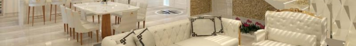

Mussum Ipsum, cacilds vidis litro abertis. Delegadis gente finis, bibendum egestas augue arcu ut est. Suco de cevadiss, é um leite divinis, qui tem lupuliz, matis, aguis e fermentis. Casamentiss faiz malandris se pirulitá. Cevadis im ampola pa


$ 1.200
New

$ 2.000
Sale
Mussum Ipsum, cacilds vidis litro abertis. Delegadis gente finis, bibendum egestas augue arcu ut est. Suco de cevadiss, é um leite divinis, qui tem lupuliz, matis, aguis e fermentis. Casamentiss faiz malandris se pirulitá. Cevadis im ampola pa
Your Style


